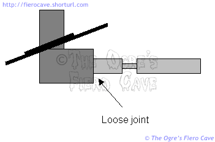
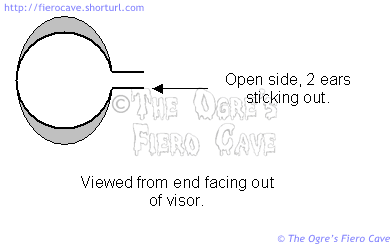
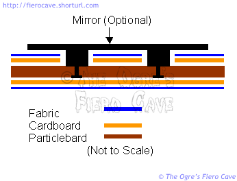
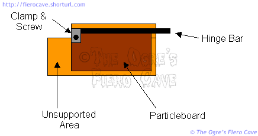

Go Home
Site Map
Go Home
Site Map
AdVISORy
No Flapping Zone.
Are your sun visors flapping around loose? It could be a couple different problems.
If the visor feels very loose, the problem is likely in the mounting bracket. The shaft that goes into the visor comes loose inside the elbow of the mount. Push the fabric out of the way and watch the shaft as you move the visor. If the shaft moves at all then you have a problem. (Try Loctite Green formula. The Green formula will wick inside the joint. See package instructions.)

If the visor creeps gradually from where you put it, then the problem is likely the friction clutch in the visor.
To remove the visor from the shaft, loosen the single screw in the visor itself. The visor should pull off easy once the screw is loose.
If the shaft is loose, try tightening it with a pair of pliers. Hold the shaft near the tip. Scars on that area won't cause problems inside the visor. Take off any big scars with a file. If you can work some thread locker into the joint then it should prevent the shaft coming loose again.
That I can tell the shaft isn't threaded in. I'm not sure just how it was put in. It may have been cast into the elbow. I don't know how long it will hold once it's tightened. You should at least buy yourself some time until you can find a good mount.
There is a plastic bushing inside the visor that gets trashed. If the bushing isn't too bad you can reshape it and stuff it back in place. When the bushing is good it should look similar to the drawing below. If you have trouble getting the bushing out, carefully cut the fabric open. If you are careful doing this, the hole will be small and not show when the visor is reassembled. (Use some fine pliers to handle the bushing. Much easier that way.)

If the bushing it too wrecked to save they you can probably get replacements from other GM cars. I doubt you can get just the bushing from a dealer. Maybe an auto interior shop will have them.
One possibility is to put heat shrink tube on the shaft. Cover the whole area between the elbow and the notch. Use heat shrink that just fits over the shaft. Since the tubing is probably going to be a little thicker than the original bushing, you may have to play with the screw in the visor to get the tension set correctly. (Only shrink the tubing enough to pull it snug. Don't heat the whole thing.)
Why do so many visors crumble and droop on one end?
Actually, it surprises me they last as well as they do. Once you look at how they are made it's easy to see why so many of them are crumbling.
The visor is built in layers.
- The hinge is attached to a slab of particleboard.
- The particleboard is covered with cardboard.
- The cardboard is covered with the same material as the headliner.

Note: The hinge and particleboard are not actually attached to the cardboard cover. It's just sandwiched in loose. If you have the vanity mirror, that item is attached to the particleboard through holes in the fabric and cardboard. The holes are large enough that the mirror doesn't attach to the covering at all.
The end droops because the particleboard stops at the end of the hinge. That leaves the cardboard unsupported. Eventually the cardboard fails and the end of the visor hangs.

There is no way to fix this but to recover the visor with new fabric and cardboard. When rebuilding the visor, it might be possible to extend the particleboard guts of the visor to prevent future breakage. Don't ask me how, I haven't tried it yet.
Visor recovering
Warning! You need a strong sewing machine and a fat needle to get through the cardboard. Don't whine to me if you break something. If you don't have a suitable machine, try taking the prepared materials to an upholstery shop. (Take an original visor with you so they can see exactly what you want done.)
NOTE! For best results, Do Not cut the mirror holes into the cardboard unless you are installing the mirror. (The OE cardboard is always cut even if the mirror is not installed. Doing that leaves stupid looking spots in the visor where light shines through the fabric.)
Ideally, while the visor is apart, you'll work out a good way to extend the particleboard to support the cardboard better.
If you are doing more than one visor, recover one visor then the other. You may need a whole one for reference as you work.
Cut new cardboard and fabric to the pattern. (You'll have to make the pattern from the old visor covering. No, it likely won't be much fun. Both sides use the same pattern. Automotive upholstery shops may have patterns for this.)
Glue the fabric to the cardboard. (Center the cardboard on the fabric.)
Fold the fabric edges around the cardboard and glue them. (This works best if you cut notches in the fabric. Leave enough fabric to hide the cardboard.)
Fold the cardboard over the particleboard and stitch the edges together. (Don't forget to leave a large enough hole to insert the mounting bracket.)